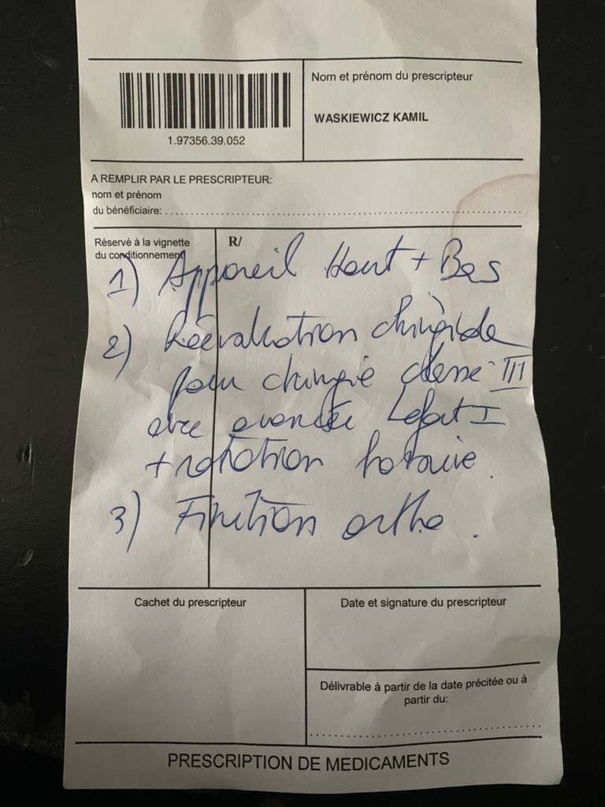

Table des matières
Quelle chirurgie?

Questions - Réponses
Chirurgie
- Questions fonctionnelle:
- Pour une bonne occlusion je dois contracter des muscles pour maintenir ma mandibule en arrière. Cette contraction constante vers l’arrière peut-elle entraîner des tensions musculaires provoquant des maux de tête liés à l’ATM?
- Kinésithérapeute: Oui.
- Chirurgien Dr. Waskiewicz: Oui.
- La chirurgie permettra d'avancer la mandibule dans un position comfortable sans tensions?
- Chirurgien Dr. Waskiewicz: Oui.
- Ma langue est longue par rapport à mon pallet ; je peux même toucher mon nez avec. Pour éviter de pousser contre mes dents avec ma langue, je dois la contracter vers le haut et vers l’arrière. Cette contraction constante vers le haut et l’arrière de la langue peut-elle entraîner des tensions musculaires provoquant des maux de tête liés à l’ATM?
- Kinésithérapeute: Oui.
- Chirurgien Dr. Waskiewicz: Oui ça peut contribuer.
- La chirurgie permettra un plus grand espace pour la langue? Cela améliorera l'élocution? Et cela décontractera la langue pour éviter des tensions?
- Chirurgien Dr. Waskiewicz: Oui la chirurgie permettra un plus grand espace. Il est possible que cela améliore l'élocution mais pas certain.
- Ouvrir ma mâchoire en grand provoque des craquements, sauf si j'avance ma mandibule. Cela limite l'ouverture de ma bouche lors de l'élocution. Est-ce que la chirurgie permettrait d’éliminer les craquements pour améliorer l'ouverture buccale pendant l'élocution?
- Chirurgien Dr. Waskiewicz: Oui cela est possible mais on ne peut jamais être certain.
- Ma respiration est plus difficile avec la position actuelle de ma mandibule lorsque ma tête est droite, mais elle s’améliore en avançant la mandibule ou en levant la tête. Une chirurgie améliorerait-elle la respiration sans devoir lever la tête?
- Chirurgien Dr. Waskiewicz: Oui la chirurgie améliore la respiration.
- Une chirurgie produit des résultats durables?
- Chirurgien Dr. Waskiewicz: Oui.
- Questions esthétique:
- Comment cette chirurgie impactera les cernes?
- Chirurgien Dr. Waskiewicz: Peut potentiellement améliorer les cernes, mais pas certain.
- Demandez au chirurgien qui va opérer?
- Comment cette chirurgie impactera le gonion (angle de la mandibule)?
- Chirurgien Dr. Waskiewicz: Modulable, à voir avec le chirurgien qui va opérer.
- Comment cette chirurgie impactera la longueur du tiers moyen du visage?
- Chirurgien Dr. Waskiewicz: À voir avec le chirurgien qui va opérer.
- Comment cette chirurgie impactera la longueur du tiers inférieur du visage?
- Chirurgien Dr. Waskiewicz: À voir avec le chirurgien qui va opérer.
- Comment cette chirurgie impactera la longueur du visage?
- Chirurgien Dr. Waskiewicz: À voir avec le chirurgien qui va opérer.
- Comment cette chirurgie impactera le nez?
- Chirurgien Dr. Waskiewicz: À voir avec le chirurgien qui va opérer.
- Après la chirurgie, les dents du haut seront plus visible en ouvrant la bouche, ce qui est plus esthétique?
- Chirurgien Dr. Waskiewicz: Oui.
- Est-ce que cette chirurgie peut rectifier une asymétrie où l'une des pommettes semble moins saillante?
- Chirurgien Dr. Waskiewicz: Pas certain.
- L’hypoplasie maxillaire donne un aspect juvénile? J’ai déjà une apparence juvénile. La chirurgie permettrait-elle d’améliorer cet aspect juvénile via les pommettes?
- Chirurgien Dr. Waskiewicz: Pas certain.
- Dans l'absolu, cette chirurgie améliorera l'esthétique?
- Chirurgien Dr. Waskiewicz: Oui.
- Autre:
- Le fil de contention orthodontique permanent pourra être retiré après la chirurgie, ce qui permettra de réduire la plaque dentaire qui s’accumule entre les dents sous le fil en pouvant passer la soie dentaire à cet endroit?
- Chirurgien Dr. Waskiewicz: Oui.
- Puis-je envisager une chirurgie, sachant qu’un traitement orthodontique la précède, en ayant des implants dentaires?
- Chirurgien Dr. Waskiewicz: Il vaut mieux faire le traitement orthodontique avant les implants.
- Quelles sont les risques de la chirurgie et leurs fréquence?
- Chirurgien Dr. Waskiewicz: Demander au chirurgien qui va opérer.
- Prix de la chirurgie et du traitement?
- Chirurgien Dr. Waskiewicz: La chirurgie est largement remboursée.
- Quel est le prix du traitement orthodontique?
Gouttière occlusale
- La gouttière occlusale peut être un test pour voir si la chirurgie aidera l'ATM?
- Doit-on porter la gouttière occlusale en journée? Si oui, pendant combien de temps chaque jour, et cela doit-il se faire à long terme également?
- L'orthodontiste dit que oui elle doit être portée en journée.
- La gouttière occlusale peut prévenir les tensions musculaires dues à un manque de relaxation, conscient ou pas, comme le bruxism?
- La gouttière occlusale permettra d'avancer la mandibule dans un position comfortable sans tensions?
- La gouttière occlusale peut-elle aussi soulager la tension musculaire causée par la langue contractée vers le haut et l'arrière du à un manque d'espace?
- Ouvrir la mâchoire provoque des craquements, sauf si j'avance la mandibule. Cela limite l'ouverture de ma bouche lors de l'élocution. Est-ce que la gouttière occlusale permettrait d’éliminer les craquements pour améliorer l'ouverture buccale pendant l'élocution?
- La gouttière occlusale ne produit pas de résultats durables et doit être portée continuellement?
- La gouttière occlusale améliorera l'esthétique?
- Quel est le prix du traitement par gouttière occlusale sur le court et long terme?
Tableau comparatif
| Facteurs |
Chirurgie |
Gouttière occlusale |
| Test |
123 |
✅ |
| Test |
Hello |
❌ |
Conclusions
...